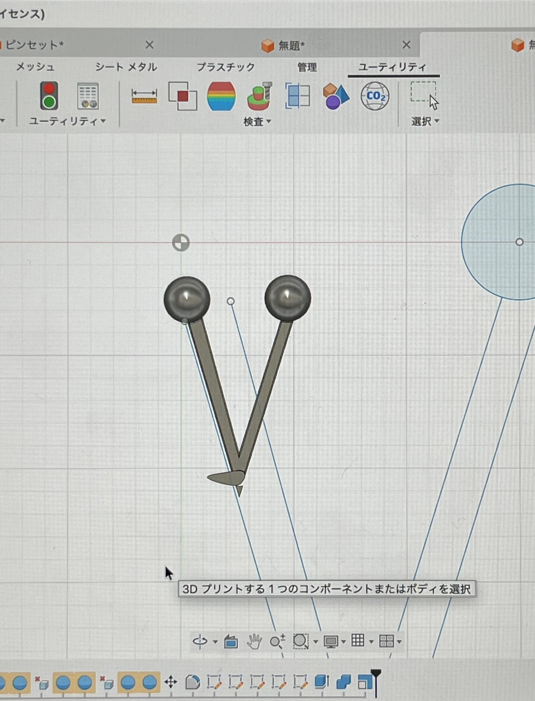
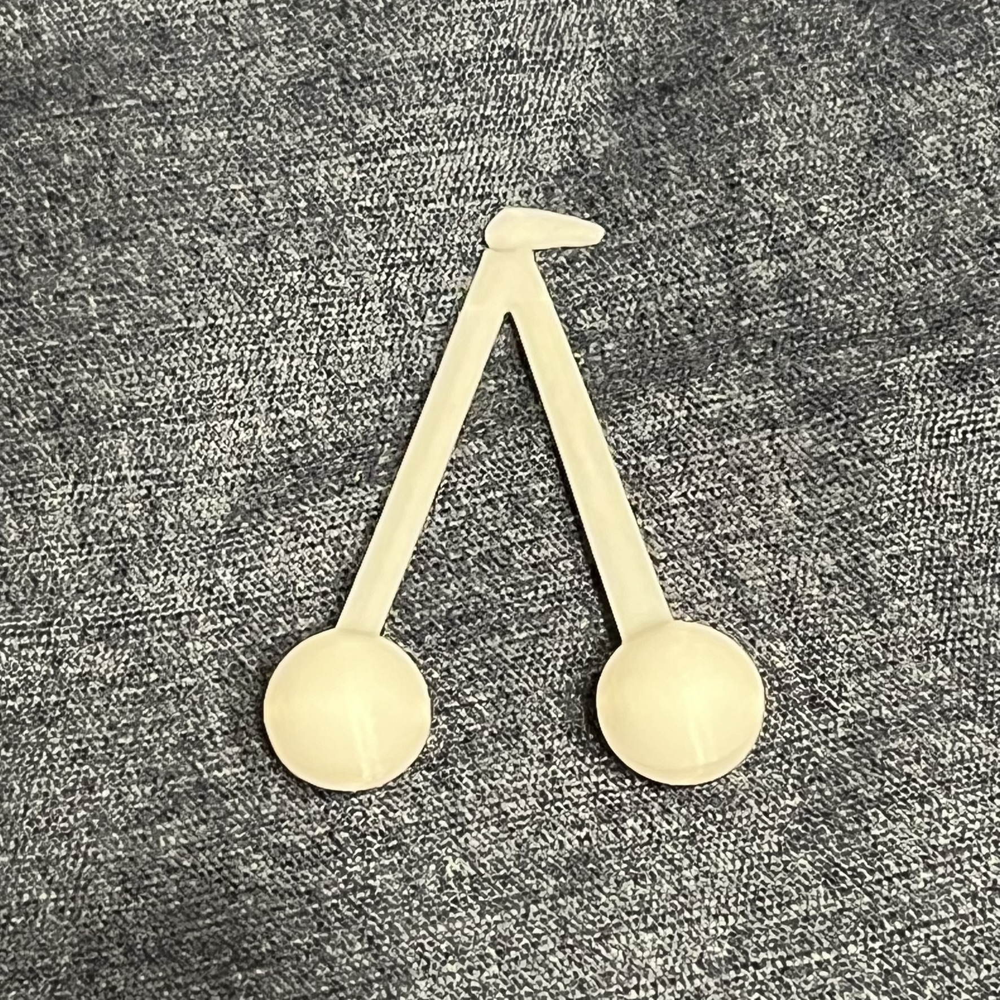

Fusionではさくらんぼの球体の部分を作るのにたくさんの時間を費やし苦戦しましたが、 球体をそのまま表示できる機能を見つけたので、そこからはスムーズにスケッチを完成させることができました！

フルーツを食べる時に使えるピンセットがあったらいいなと思ったので作ってみようと思いました。

Fusionではさくらんぼの球体の部分を作るのにたくさんの時間を費やし苦戦しましたが、 球体をそのまま表示できる機能を見つけたので、そこからはスムーズにスケッチを完成させることができました！

完成系はこんな感じです！取手の部分がしっかり動き、 ちゃんと物を掴むこともできました！ フルーツを食べる際にはもってこいのピンセットが完成しました🍒✨